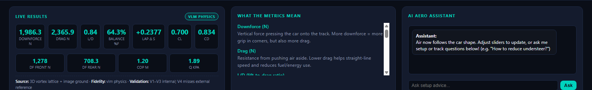
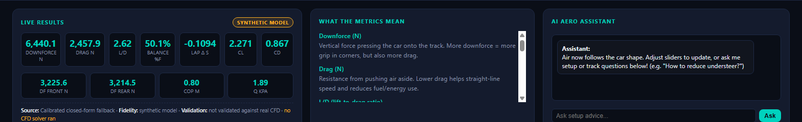

Same app, same physics numbers. What changed is that the interface now says which model produced them.
VLM PHYSICS

Source: 3D vortex lattice + image ground · Validation: V1–V3 internal; V4 misses the external reference.
The viewer badge also reads ● VLM PHYSICS.
SYNTHETIC MODEL

Source: calibrated closed-form fallback · Validation: not validated against real CFD · no CFD solver ran.
For comparison, this path reports 6,440 N downforce versus 1,986 N from the VLM.